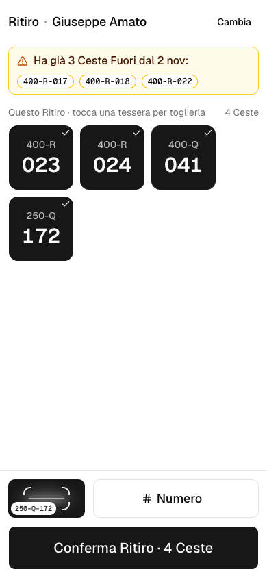
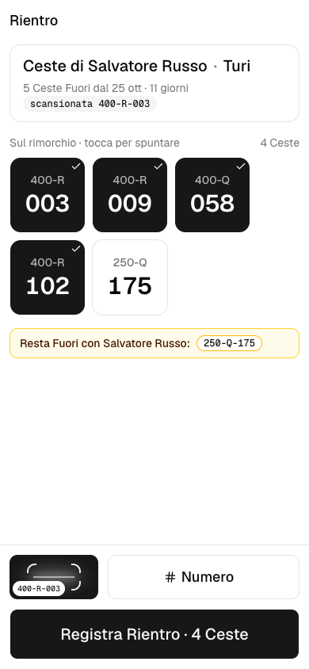
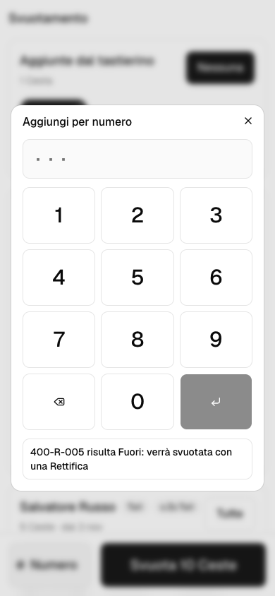
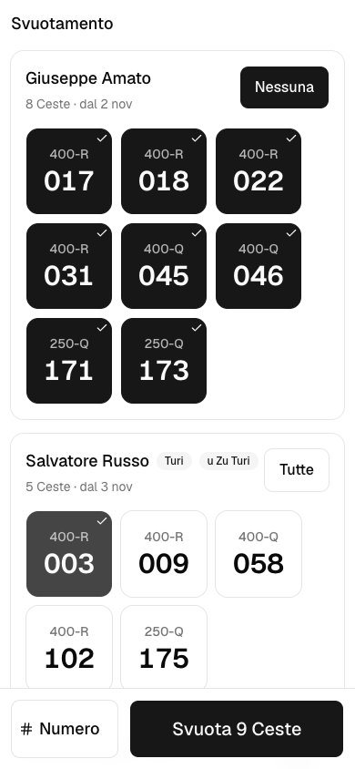
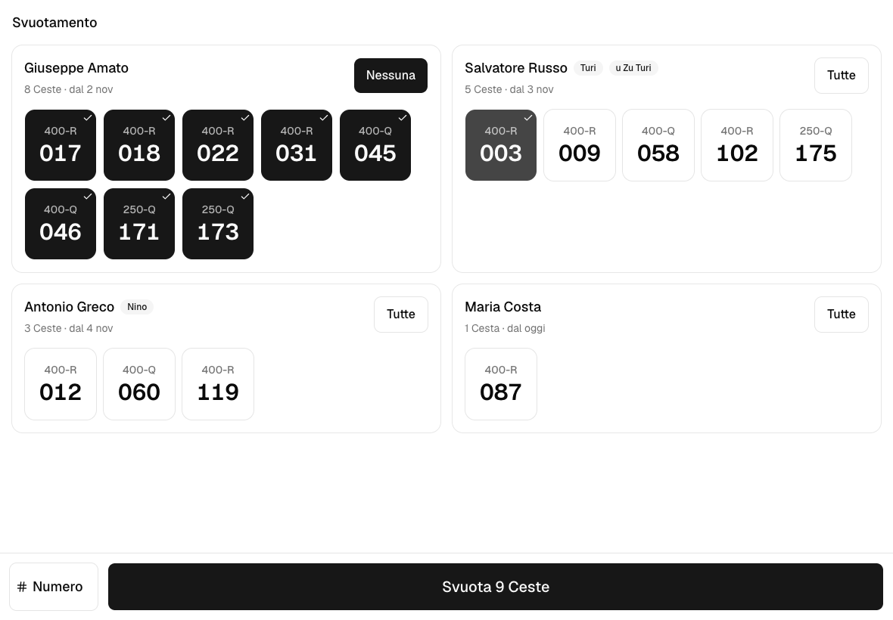
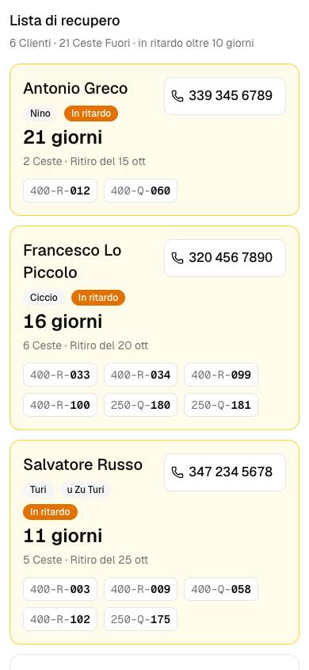
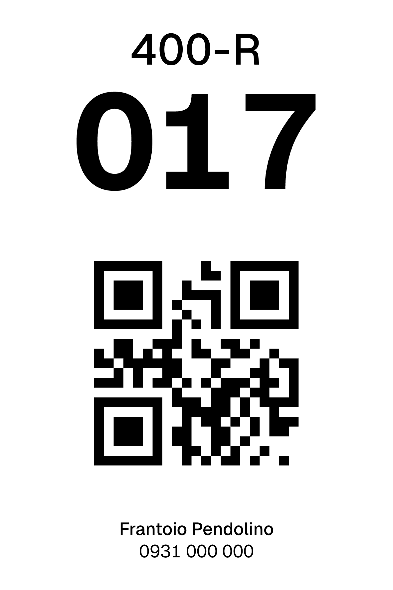

Applicazione web per telefono e tablet che registra ogni cesta che esce dal frantoio e ogni cesta che rientra: chi ce l'ha, da quanto tempo, e quante sono davvero disponibili nella mattina di punta.
Oggi nessuno scrive niente nel momento in cui una cesta esce dal frantoio. Questa app lo fa in pochi secondi.
Il frantoio possiede circa 195 ceste, 170 da 400 kg e una ventina da 250 kg, e le presta ai clienti, che le riempiono di olive e le riportano per la molitura. In una giornata di punta della campagna passano circa 150 clienti, e un cliente prende in media 6 ceste alla volta.
Ogni anno qualche cesta non torna, e oggi non c'è modo di sapere quante, né di chi. Non esiste un registro né una ricevuta, e nessuno annota nulla quando una cesta lascia il piazzale. Il tempo che una cesta passa a casa del cliente è l'unico in cui può perdersi, ed è proprio quello di cui non resta traccia.
Perdere ceste costa più del prezzo d'acquisto. Con 195 ceste e 6 per ritiro, al massimo una trentina di clienti può avere ceste in mano nello stesso momento. La flotta è il limite reale del frantoio nella sua mattina più piena, e ogni cesta persa è capacità che manca proprio quando vale di più.
Un'applicazione web, in italiano, da usare al banco sul telefono e allo svuotamento su un telefono o su un tablet. Ogni cesta porta un'etichetta stampata con QR e un codice leggibile a occhio. L'app registra ogni ritiro, rientro e svuotamento sulla singola cesta, così in ogni momento il frantoio sa quali ceste sono disponibili, quali sono fuori e con chi, e quali aspettano la molitura.
Software custom DigitalBorders. Interfaccia web installabile sul telefono (PWA) su Vercel, dati e logica su Convex, accessi con email e password. Il gestionale OleaPlus già in uso resta dov'è e non viene mai scritto; la fatturazione resta fuori dall'app.
Tre gesti: Ritiro, Rientro, Svuotamento. Ognuno in pochi secondi, ognuno sulla singola cesta.
L'operatore cerca il cliente per nome, o per soprannome quando ci sono omonimi, oppure lo crea al volo con il solo nome, perché i dati fiscali servono alla molitura e non alla fila. Poi la fotocamera resta aperta. Ogni QR inquadrato suona e si aggiunge alla lista, e sei ceste sono un gesto solo. Se un'etichetta è sporca o coperta, si digita il numero della cesta. Si possono aggiungere la firma del cliente e una foto del carico; nessuna delle due è obbligatoria.
Se il cliente davanti all'operatore ha già ceste fuori, l'app lo dice subito: quali ceste e da quando. È il momento in cui gliele si chiede indietro prima di dargliene altre, e la risposta quando «ne avevo prese due» e l'app dice tre.
Nessuna ricerca. Si scansiona una qualsiasi delle ceste del carico e l'app dice di chi sono. Se ne tornano quattro su sei, le altre due restano contate come fuori. Le ceste rientrate passano in Attesa molitura, con il nome del cliente addosso, finché non vengono svuotate.



Anteprime indicative con dati di esempio. L'aspetto definitivo lo rifiniamo con il frantoio durante la consegna.
Il momento più difficile di tutto il flusso. Con le parole del frantoio, chi svuota ha le mani sporche e non prenderà mai in mano il telefono. Per questo la schermata è fatta di bottoni grandi, una cesta per bottone, raggruppati per cliente, con il cliente rientrato da più tempo in cima. Un tocco seleziona una cesta, un tocco sul nome le seleziona tutte, un solo pulsante conferma. Funziona uguale sul telefono e su un eventuale tablet fisso nel punto di svuotamento.


In ogni momento si vede quante ceste sono disponibili per portata (400 e 250 kg), quante sono fuori e quante aspettano la molitura. Per una singola cesta, digitando il numero, si vede dove l'app crede che sia e tutta la sua storia.
Nessuna app da installare dagli store. Si apre dal browser e si aggiunge alla schermata iniziale. L'accesso dura tutta la campagna senza richiedere la password. Un ritiro iniziato sopravvive a un calo di rete o a un telefono che si spegne.
Una cauzione non è nelle abitudini del frantoio, e non serve. Il deterrente è che si vede. Una lista di tutti i clienti che hanno ceste fuori, ordinata per chi le tiene da più tempo, con il numero di telefono accanto. Il recupero comincia dal caso peggiore, e per chiamare basta un tocco. Il frantoio decide dopo quanti giorni una cesta è «in ritardo»; quella soglia evidenzia i ritardi e nessuno esce dalla lista per questo.

Una cesta persa da un cliente, una rotta al frantoio e una scansionata per sbaglio sono tre fatti diversi. Ognuno si chiude con una Rettifica che porta il suo motivo, così i numeri dei furti non si mischiano con quelli delle rotture, e una cesta che ricompare torna in flotta senza cancellare nulla.
Il titolare può rileggere ogni azione fatta nell'app, con chi l'ha fatta, quando e cosa ha cambiato, filtrando per giorno, per cliente o per operatore. Un ritiro di sei ceste è una riga sola.
Oggi nessuna cesta è marcata. L'app assegna a ogni cesta un numero unico per tutta la flotta e lo stampa dentro un codice parlante, 400-R-017, cioè portata, forma e numero, leggibile da una persona quanto da una fotocamera. Il titolare inserisce la flotta a lotti («50 ceste da 400 kg rettangolari»), l'app genera i numeri e un PDF con le etichette da consegnare alla tipografia. Un'etichetta strappata si ristampa identica; una cesta comprata a stagione in corso entra nello stesso modo.

Senza etichette l'app non ha nulla da tracciare. Consegniamo per primi il censimento e il PDF, così la tipografia stampa e le etichette sono sulle ceste prima che apra la campagna. Tempi e materiali della tipografia sono a cura del frantoio (vedi 07).
Le parole dell'app sono quelle raccolte al frantoio. Queste sono le uniche che servono.
Scelte già prese con il frantoio durante l'analisi. Valgono per tutta la consegna e non comportano maggiorazioni.
L'app è in uso dall'apertura della campagna 2026. Le etichette arrivano per prime, perché la tipografia è il vero tempo lungo.
I tempi decorrono dalla firma e dalla conferma di tre informazioni da parte del frantoio: la forma delle ceste da 250 kg; formato e materiale dell'etichetta richiesti dalla tipografia; se nome e telefono del frantoio vanno sull'etichetta. La stampa e l'applicazione fisica delle etichette sono a cura del frantoio.
| Fornitura | Perimetro | Importo |
|---|---|---|
| Pendolino Ceste Applicazione completa come descritta ai punti 01–07 |
Censimento ed etichette; Ritiro, Rientro, Svuotamento; avviso al banco e lista di recupero; Rettifiche, Campagne, Registro; operatori e inviti; formazione e avvio | € 9.800 |
| CONDIZIONE RISERVATA | € 3.000 | |
Il valore ordinario del progetto è € 9.800. Trattandosi della prima installazione in un frantoio e di un rapporto diretto, viene proposto a € 3.000 se confermato entro la validità del preventivo.
L'applicazione richiede hosting gestito, backup, monitoraggio e aggiornamenti continuativi. Un solo piano, dimensionato su un frantoio che lavora pochi mesi l'anno.
| Piano | Canone | Incluso |
|---|---|---|
| Care Campagna | € 500/anno circa € 42 al mese |
Hosting, database, backup giornalieri, monitoraggio e aggiornamenti di sicurezza; assistenza prioritaria da ottobre a gennaio; 4 ore/anno di piccoli interventi e configurazioni. Attività extra: € 75/ora, previa autorizzazione. |
Il canone decorre dal 31° giorno successivo al go-live ed è previsto finché DigitalBorders mantiene la responsabilità operativa dell'ambiente di produzione. Le ore incluse non sono cumulative; nuove funzioni restano separate.
Non incluse in questa offerta. Nascono da richieste emerse durante l'analisi; l'app è già predisposta per accoglierle senza rifare nulla.